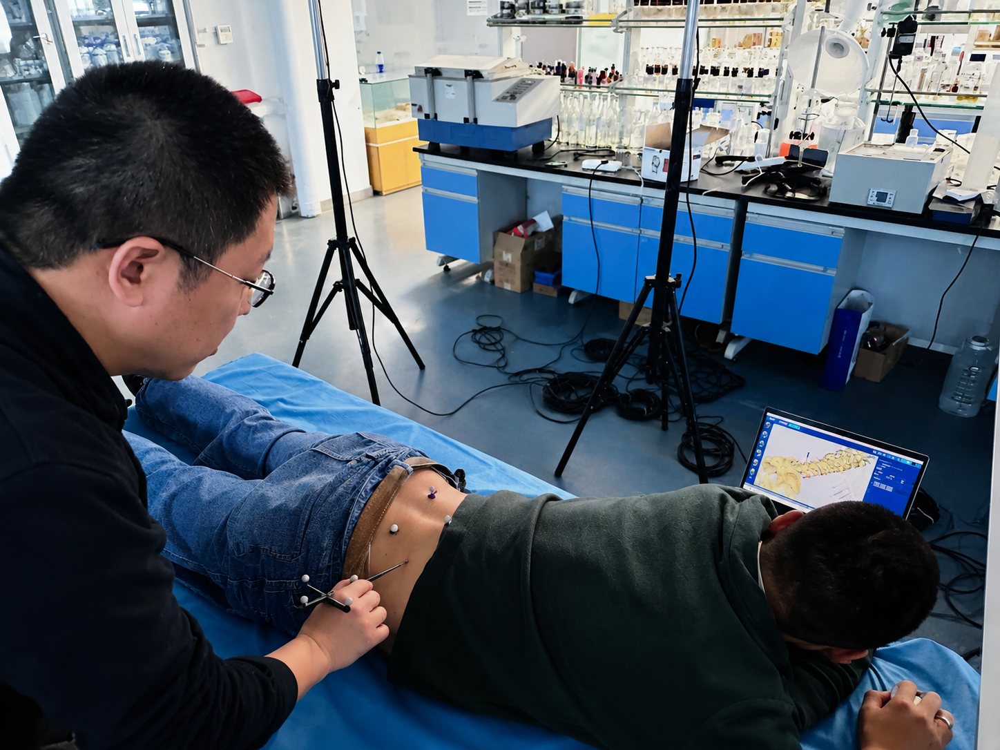
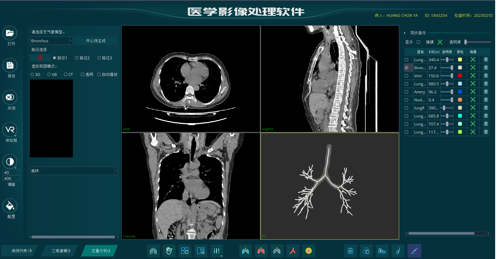
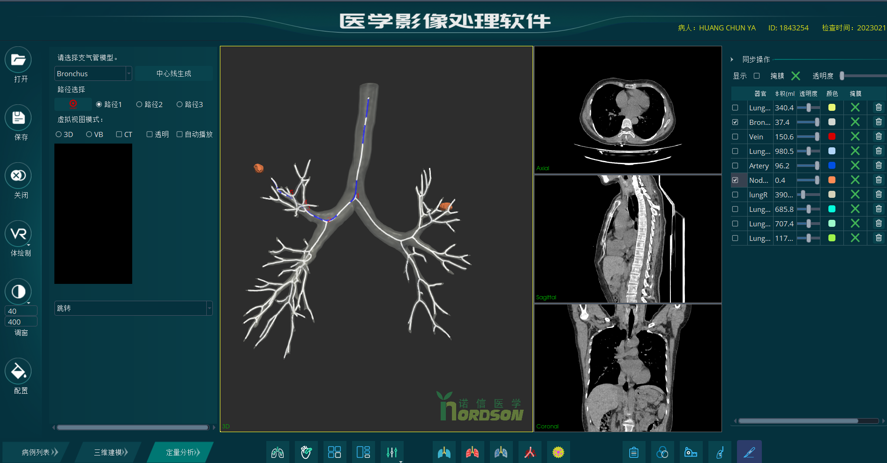
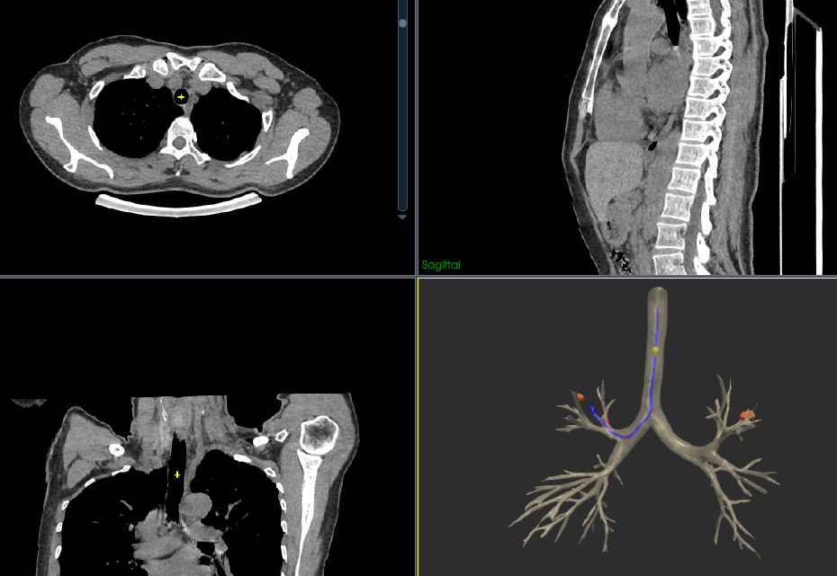
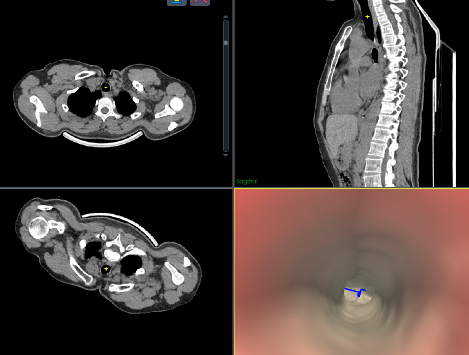

Project 01 - Image-guided intervention
Puncture Navigation
A navigation workflow for puncture procedures that brings anatomical visualization, marker-based spatial tracking, and needle trajectory feedback into one focused demonstration environment.
- Supports target planning and trajectory review before the puncture path is executed.
- Combines physical tracking markers with an on-screen anatomy view for intuitive orientation.
- Designed for research demonstration, workflow validation, and training-oriented visualization.

Project 02 - Airway navigation
Virtual Bronchoscopy Navigation
A CT-based bronchoscopic navigation workflow that generates an airway centerline, computes a target route, and presents both global 3D and first-person virtual bronchoscopy views for branch-by-branch navigation.
- Generates a bronchial tree centerline from the selected airway model.
- Calculates a planned route from the trachea to a selected peripheral target.
- Displays synchronized CT slices, 3D airway context, and simulated endoscopic navigation.



